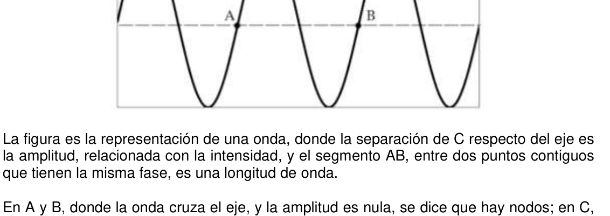
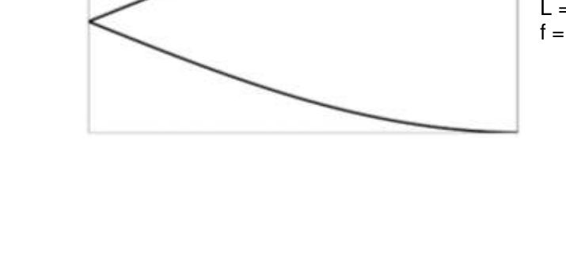
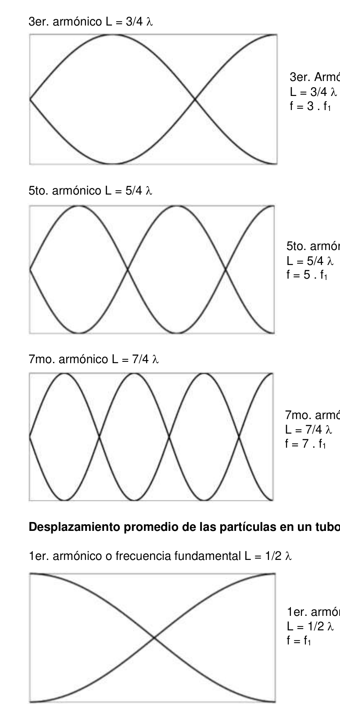
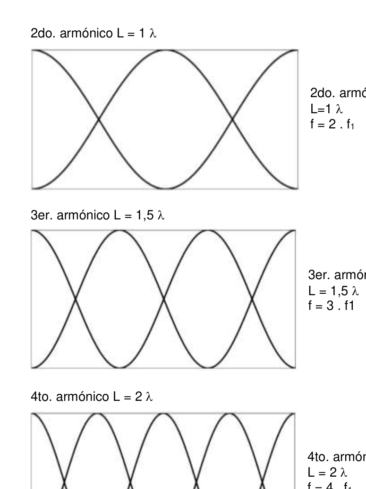

PE19. Escuela Técnica N° 9 Ing. Luis A. Huergo. Ciudad Autónoma de Buenos Aires.
Un Arco Iris Sonoro
Investigación de la velocidad del sonido por resonancia a distintas frecuencias, en tubos abiertos, o cerrados en un extremo.
La figura es la representación de una onda, donde la separación de C respecto del eje es la amplitud, relacionada con la intensidad, y el segmento AB, entre dos puntos contiguos que tienen la misma fase, es una longitud de onda.
En A y B, donde la onda cruza el eje, y la amplitud es nula, se dice que hay nodos; en C, donde la amplitud es máxima, se tiene un anti-nodo. La frecuencia, cuya unidad es Hertz (Hz), es la cantidad de ciclos por segundo, o la cantidad de longitudes de onda de propagación cada segundo. La velocidad de la onda es, según lo anterior:
𝑣= 𝜆 𝑓 𝑣 : velocidad : longitud de onda 𝑓: frecuencia
El sonido es una perturbación de presión en el medio elástico por el que se propaga. La energía de la onda sonora varía entre energías potencial de compresión elástica y cinética por la velocidad de las partículas del medio. Vaso # Masa [kg.] Fuerza aplicada [N] Longitud de esfuerzo [m] 1
2
3
4
5
154 - OAF 2018 Una onda sonora estacionaria es aquella que oscila en el tiempo pero cuyo perfil de presiones no cambia para ciertas posiciones. En un tubo cerrado en un extremo, las ondas sonoras se propagan en ambos sentidos, desde el parlante hacia el fondo, y se reflejan en el fondo hacia el parlante. Por la geometría del tubo, las ondas en ambos sentidos de propagación interfieren de forma constructiva. Existe resonancia si la longitud de onda está en determinada relación con la velocidad de propagación y las características geométricas del medio, que en esta experiencia son la longitud del tubo por el que se propaga y, en menor medida, su diámetro. La longitud resonante no es la del tubo exacta; puede observarse resonancia sin estar el parlante en contacto con el borde del tubo, sino a cierta distancia. Se usa parlante y generador de ondas para crear resonancia. Se varían las condiciones de la experiencia -frecuencia del sonido y características geométricas del tubo-. Se estudia la relación entre longitud y frecuencia para obtener la velocidad del sonido. La longitud de onda -lambda- se determina con la longitud del tubo, y la frecuencia con el generador.
Un tubo que resuena, abierto en un extremo y cerrado en el otro, tendrá un nodo en el extremo cerrado y un anti-nodo en el abierto. Un nodo representa un punto en el que la velocidad del aire es mínima, y el anti-nodo representa el punto donde la velocidad del aire es máxima. Es máxima en el extremo abierto porque en él se genera el sonido, es mínima en la cara cerrada, porque es una parte inmóvil del tubo, y las partículas en el límite con él tienen velocidad nula. Los gráficos representan la velocidad promedio de las partículas en cada posición del tubo; puede efectuarse un gráfico similar de presiones en función de la posición. El desplazamiento de las partículas y la presión del aire son dos variables que oscilan. Al existir resonancia, por interferencia constructiva, el sonido se hace intenso, y se atenúa en otro caso. El aire húmedo, la temperatura, y la presión, son factores que pueden influir en la velocidad del sonido.
Para tubos cerrados son posibles los armónicos 𝜆= 4 𝐿 2 𝑛−1 con n = 1, 2, 3, 4, …
Considerando la corrección de longitud del tubo, la longitud efectiva de resonancia puede ser: Lef = L + 0,4 D
Para tubos abiertos son posibles los armónicos 𝜆= 2 𝐿 𝑛 con n = 1, 2, 3, 4, …
O considerando la corrección de longitud del tubo, por el ajuste hecho en dos extremos, sería Lef = L + 0,8 D
y la fórmula para calcular longitud de onda queda 𝜆= 2 (𝐿+0,8𝐷) 𝑛 para los mismo valores de n
Posibles pasos de la experiencia para un tubo con un extremo cerrado 1- Para una longitud del tubo inicial nula, elegir una frecuencia a emitir por el parlante. 2- Alargar la longitud de aire en el interior del tubo, y manteniendo la misma frecuencia en el parlante, registrar con la mayor exactitud, cada longitud del tubo en resonancia. 3- Determinar la conveniencia de ajustar la longitud según el diámetro D del tubo. 4- Calcular la velocidad del sonido; puede ser calculando la distancia entre nodos, o considerando la relación entre y la longitud del tubo. Se puede evaluar la aplicación de la corrección por longitud efectiva. 5- Repetir lo anterior con otra/s frecuencia/s.
OAF 2018 - 155 6- Obtener el valor mas exacto posible de la velocidad del sonido explicando el método elegido. 7- Entre tres resonancias, se pueden medir dos medias longitudes de onda, promediar, y calcular la velocidad con tal valor de ½ . En caso de haber sido aplicado este método en el punto 6, buscar otro alternativo. 8- Explicar el mejor método, a su consideración, para determinar el valor de la velocidad del sonido, con las varias velocidades obtenidas por resonancia.
La velocidad de propagación del sonido en el aire se puede obtener, teniendo la temperatura en ºC, con la fórmula 𝑣= 331,4 𝑚/𝑠 + 0,6 𝑇𝑐
Para distintos gases o para aire, una aproximación mejor puede obtenerse con la siguiente fórmula, originada en la teoría y probada empíricamente 𝑣= √𝛾 𝑅 𝑇 𝑀 : constante adiabática R: constante universal de los gases M: masa molar del gas T: temperatura en Kelvin Para el aire, 𝛾= 1,4 R = 8,314 J mol-1 K-1 M = 28,97 g mol-1 -aire seco-
9- Comparar la velocidad obtenida de forma experimental con la calculada.
Tubo resonante con extremos abiertos En resonancia tendrá un anti-nodo en cada extremo, y al menos un nodo interior. El número de nodos se relaciona con la longitud de onda y el numero de armónico. El primer armónico -fundamental-, tiene un nodo, el segundo armónico dos, etc.
10- Obtener resonancia para distintas frecuencias en varios tubos abiertos en ambos extremos de longitud fija. 11- Calcular la frecuencia de resonancia, para tubos cerrados en un extremo, de la misma longitud que el tubo abierto, y comparar frecuencias y longitud. 12- Calcular la velocidad del sonido con tubos abiertos.
Desplazamiento promedio de las partículas, en un tubo cerrado en un extremo, con una onda en resonancia
1er. armónico o frecuencia fundamental L = 1/4
1er. armónico o frecuencia fundamental L = 1/4 f = f1
156 - OAF 2018 3er. armónico L = 3/4
3er. Armónico L = 3/4 f = 3 . f1
5to. armónico L = 5/4
5to. armónico L = 5/4 f = 5 . f1
7mo. armónico L = 7/4
7mo. armónico L = 7/4 f = 7 . f1
Desplazamiento promedio de las partículas en un tubo abierto en resonancia
1er. armónico o frecuencia fundamental L = 1/2
1er. armónico o frecuencia fundamental L = 1/2 f = f1
OAF 2018 - 157 2do. armónico L = 1
2do. armónico L=1 f = 2 . f1
3er. armónico L = 1,5
3er. armónico L = 1,5 f = 3 . f1
4to. armónico L = 2
4to. armónico L = 2 f = 4 . f1




Topic: Oscillations & Waves Metodi: Experimental Data Analysis, Wave Equation, Graph Linearization Competenze: Physical Reasoning, Experimental Data Analysis, Mathematical Modeling Objects: Tube Fonte: Testo (PDF) — p.5
PE19. Scuola tecnica N° 9 Ing. Luis A. Ho urgo. Città autonoma di Buenos Aires.
Un Rainbow Sonoro
Indagine sulla velocità del suono per risonanza a diverse frequenze, in tubi aperte o chiuse all’estremità.
La figura è la rappresentazione di un’onda, dove la separazione di C rispetto all’asse è l’ampiezza, correlata all’intensità, e il segmento AB, tra due punti contiguti che hanno la stessa fase, è una lunghezza d’onda.
In A e B, dove l’onda attraversa l’asse, e l’ampiezza è zero, si dice che ci sono nodi; in C, dove l’ampiezza è massima, si ha un anti-nodo. La frequenza, la cui unità è Hertz (Hz), è il numero di cicli al secondo, o il numero di lunghezze d’onda di diffusione ogni secondo. La velocità dell’onda è, secondo quanto sopra:
𝑣= 𝜆 𝑓 V: velocità : lunghezza d’onda f: frequenza
Il suono è una perturbazione della pressione nel mezzo elastico attraverso il quale si diffonde. La L’energia dell’onda sonora varia tra le energie potenziali di compressione e l’energia di compressione. Cinetica per la velocità delle particelle del mezzo. Vaso # Massa [kg.] Forza applicata [N] Lunghezza di sforzo [m] 1
2
3
4
5
154 - OAF 2018 Un’onda sonora stazionaria è quella che oscilla nel tempo ma il cui profilo di Le pressioni non cambiano per alcune posizioni. In un tubo chiuso a un’estremità, le Le onde sonore si diffondono in entrambi i sensi, dal parlante verso il fondo, e si riflettono in fondo verso il parlante. Per la geometria del tubo, le onde in entrambi i lati. i sensi di diffusione interagiscono in modo costruttivo. La risonanza è possibile se la lunghezza La velocità di diffusione è determinata e la velocità di diffusione è determinata. Le caratteristiche geometriche del mezzo, che in questa esperienza sono la lunghezza del tubo che si diffonde e, in misura minore, il suo diametro. La lunghezza risonante non è la La risonanza può essere osservata senza che il parlante sia in contatto con il il bordo del tubo, ma a una certa distanza. Si usa un parlante e un generatore di onde per creare risonanza. Le condizioni variano. La frequenza del suono e le caratteristiche geometriche del tubo. Se studia la relazione tra lunghezza e frequenza per ottenere la velocità del suono. La L’onda di lunghezza -lambda- è determinata dalla lunghezza del tubo e dalla frequenza con il
- Generatore.
Un tubo che risuona, aperto ad una estremità e chiuso all’altra, avrà un nodo all’interno Un’estremità chiusa e un’anti-nodo all’aperto. Un nodo rappresenta un punto in cui la La velocità dell’aria è minima, e l’anticnodo rappresenta il punto in cui la velocità del L’aria è massima. È massima all’estremità aperta perché in essa viene generato il suono, è minima sul volto chiuso, perché è una parte immobile del tubo, e le particelle nel limite con lui hanno velocità zero. I grafici rappresentano la velocità media delle Le particolatori in ogni posizione del tubo; un grafico di pressione simile può essere effettuato in funzione della posizione. Il movimento delle particelle e la pressione dell’aria sono due. variabili che oscilano. Quando c’è una risonanza, per interferenza costruttiva, il suono diventa intenso, e si attenua. In un altro caso. L’aria umida, la temperatura e la pressione, sono fattori che possono influenzare. nella velocità del suono.
Per tubi chiusi sono possibili gli armonici λ= 4 𝐿 2 n−1 con n = 1, 2, 3, 4, …
Considerando la correzione della lunghezza del tubo, la lunghezza effettiva di risonanza può essere essere: Lef = L + 0,4 D
Per tubi aperti sono possibili gli armonici λ= 2 𝐿 n con n = 1, 2, 3, 4, …
O considerando la correzione della lunghezza del tubo, per il regolamento fatto a due estremità, Sarebbe Lef = L + 0,8 D
e la formula per calcolare la lunghezza d’onda rimane λ= 2 (𝐿+0,8𝐷) 𝑛 per gli stessi valori di n
Possibili passi da esperienza per un tubo con un’estremità chiusa 1- Per una lunghezza di tubo iniziale zero, scegliere una frequenza da emettere per il Parlare. 2- allargare la lunghezza dell’aria all’interno del tubo, mantenendola stessa frequenza sullo speaker, registrare con maggiore precisione ogni lunghezza del tubo in risonanza. 3- Determinare se è opportuno regolare la lunghezza secondo il diametro D del tubo. 4- Calcolare la velocità del suono; può essere calcolare la distanza tra i nodi, o considerando il rapporto tra e la lunghezza del tubo. Si può valutare la l’applicazione della correzione per la lunghezza effettiva. 5- Ripetere il precedente con una/s altra frequenza/s.
OAF 2018 - 155 6- Ottenere il valore più preciso possibile della velocità del suono spiegando il metodo scelto. 7- Tra tre risonanti, si possono misurare due medie lunghezze d’onda, per aver media, e calcolare la velocità con tale valore di 1⁄2 . In caso di essere stato Se si applica tale metodo al punto 6, si deve cercare un’altra alternativa. 8- Esprimi il metodo migliore, a tua disposizione, per determinare il valore della velocità del suono, con le varie velocità ottenute da risonanza.
La velocità di diffusione del suono nell’aria può essere ottenuta, avendo la velocità di diffusione del suono nell’aria. temperatura in oC, con la formula 𝑣= 331,4 𝑚/𝑠 + 0,6 𝑇𝑐
Per diversi gas o per aria, un approccio migliore può essere ottenuto con la La seguente formula, originata dalla teoria e provata empiricamente 𝑣= √𝛾 𝑅 𝑇 𝑀 : costante adiabática R: costante universale dei gas M: massa mollare del gas T: temperatura in Kelvin Per l’aria, 𝛾= 1,4 R = 8,314 J mol-1 K-1 M = 28,97 g mol-1 -aria secca-
9- Confronta la velocità ottenuta sperimentalmente con quella calcolata.
Tubo risonante con le estremità aperte In risonanza avrà un anti-nodo a ciascuna estremità, e almeno un nodo interno. El Il numero di nodi è correlato alla lunghezza d’onda e al numero di armonici. Il primo l’armonico - fondamentale-, ha un nodo, il secondo armonico due, ecc.
10- Ottenere risonanza per diverse frequenze in diversi tubi aperti in entrambe le estremità di lunghezza fissa. 11- Calcolare la frequenza di risonanza, per tubi chiusi a un’estremità, della la stessa lunghezza del tubo aperto, e confrontare frequenze e lunghezza. 12- Calcolare la velocità del suono con tubi aperti.
Movimento medio delle particelle, in un tubo chiuso a un’estremità, con Un’onda in risonanza.
1er. L = 1/4
1er. armonica o frequenza fondamentale L = 1/4 f = f1
156 - OAF 2018 3er. L = 3/4
3er. Armonica L = 3/4 f = 3 . f1
5to. L = 5/4
5to. Armonica L = 5/4 f = 5 . f1
7mo. L = 7/4
7mo. Armonica L = 7/4 f = 7 . f1
Movimento medio delle particelle in un tubo aperto in risonanza
1er. L = 1/2
1er. armonica o frequenza fondamentale L = 1/2 f = f1
OAF 2018 - 157 2do. L = 1
2do. Armonica L=1 f = 2 . f1
3er. L = 1,5
3er. Armonica L = 1,5 f = 3 . f1
4to. L = 2
4to. Armonica L = 2 f = 4 . f1
Topic: Oscillations & Waves Metodi: Experimental Data Analysis, Wave Equation, Graph Linearization Competenze: Physical Reasoning, Experimental Data Analysis, Mathematical Modeling Objects: Tube Fonte: Testo (PDF) — p.5
PE19. Technical School N° 9 Ing. Louis A. I’m going to be a little late. The Autonomous City of Buenos Aires.
A Sounding Rainbow
Research of sound speed by resonance at different frequencies, in tubes Open or closed at one end.
The figure is the representation of a wave, where the separation of C from the axis is the width, related to intensity, and the AB segment, between two adjacent points It’s a wavelength.
In A and B, where the wave crosses the axis, and the amplitude is zero, we say there are nodes; in C, where the width is maximum, you have an anti-knot. The frequency, whose unit is Hertz (Hz), is the number of cycles per second, or the number of wavelengths of spread every second. The wave velocity is, as above:
𝑣= 𝜆 𝑓 v: speed : wavelength f: frequency
Sound is a pressure disturbance in the elastic medium through which it propagates. La The sound wave energy varies between the potential energies of elastic compression and the potential energy of the sound wave. kinetics by the velocity of the particles in the medium. Vessel # Mass [kg.] Applied force [N] Strength length [m] 1
2
3
4
5
The Commission shall adopt delegated acts in accordance with Article 21 of this Regulation. A stationary sound wave is one that oscillates in time but whose profile of sound is not known. Pressures do not change for certain positions. In a closed tube at one end, the Sound waves are propagated in both directions, from the speaker to the bottom, and they are They reflect back to the speaker. By the geometry of the tube, the waves in both senses of propagation interfere constructively. There is resonance if the length The wave is in a certain relation to the rate of propagation and the The geometric characteristics of the medium, which in this experiment are the length of the tube The Commission shall adopt the following measures: The resonant length is not the The sound is not directly visible from the speaker’ s mouth. the edge of the tube, but at a certain distance. It uses a speaker and wave generator to create resonance. The conditions vary. The first is the use of the ‘scale’ of the ‘scale’. Se It studies the relationship between length and frequency to get the speed of sound. La The wavelength -lambda- is determined by the length of the tube, and the frequency by the The generator.
A resonating tube, open at one end and closed at the other, will have a node at the The end is closed and the anti-node is open. A node represents a point at which the The air velocity is minimal, and the anti-knot represents the point where the velocity of the Air is maximum. It’s maximum at the open end because it generates sound, it’s The small particles in the closed face, because it’s a stationary part of the tube, and the particles in the limit with it have zero speed. The graphs represent the average speed of the Particles in each position of the tube; a similar pressure graph can be made in the position function. The movement of particles and the air pressure are two things. variables that oscillate. When there is resonance, by constructive interference, the sound becomes intense, and it is attenuated. In another case. Humidity, temperature, and pressure, are factors that can influence in the speed of sound.
For closed tubes harmonics λ= are possible 4 𝐿 2 n−1 with n = 1, 2, 3, 4, …
Considering the correction of tube length, the effective resonance length can be be: Lef = L + 0,4 D
For open tubes harmonics λ= are possible 2 𝐿 n with n = 1, 2, 3, 4, …
Or considering the correction of the length of the tube, by the adjustment made at two ends, If we were to do this, we would be Lef = L + 0.8 D
and the formula for calculating wavelength is λ= 2 (𝐿+0,8𝐷) 𝑛 for the same values as n
Possible steps of experience for a closed end tube 1- For a zero initial tube length, choose a frequency to be emitted by the I’m not talking. 2- Extend the length of air inside the tube, and keep it the same Frequency in the speaker, recording with the greatest accuracy, each length of the tube In resonance. 3- Determine whether the length should be adjusted according to the diameter D of the tube. 4- Calculate the speed of sound; it can be by calculating the distance between nodes, or Considering the ratio of to the length of the tube. The evaluation of the the application of the correction for effective length. 5- Repeat the above with a different frequency.
The Commission shall adopt implementing acts in accordance with Article 21 of the Financial Regulation. 6- Get the most accurate possible value of the speed of sound by explaining the method chosen. 7- Between three resonances, two half wavelengths can be measured. average, and calculate the velocity with such a value of 1⁄2 . In case it was . If this method is applied in point 6, look for another alternative. 8- Explain the best method, at your discretion, for determining the value of the the speed of sound, with the various speeds obtained by resonance.
The speed of propagation of sound in the air can be obtained by having the temperature in oC, with the formula 𝑣= 331,4 𝑚/𝑠 + 0,6 𝑇𝑐
For different gases or for air, a better approximation can be obtained by using the The following formula, originating in the theory and proven empirically 𝑣= √𝛾 𝑅 𝑇 𝑀 : adiabatic constant A: Universal gas constant M: molar mass of gas T: temperature in Kelvin For the air, 𝛾= 1,4 R = 8,314 J mol-1 K-1 M = 28,97 g mol-1 - dry air
9- Compare the experimental speed with the calculated speed.
Resonant tube with open ends. In resonance, you’ll have an anti-node at each end, and at least one inner node. El The number of nodes is related to the wavelength and the number of harmonics. The first one . The second harmonic is two, and so on.
10- Get resonance for different frequencies in several open tubes in both ends of a fixed length. 11- Calculate the resonance frequency for tubes closed at one end of the tube. The length of the tube is the same as the open tube, and compare frequencies and length. 12- Calculate the speed of sound with open tubes.
Average movement of particles, in a closed tube at one end, with A wave in resonance.
1er. Harmonic or fundamental frequency L = 1/4
1er. Harmonic or fundamental frequency L = 1/4 f = f1
The Commission shall adopt delegated acts in accordance with Article 21 of this Regulation. 3er. Harmonic L = 3/4
3er. Harmonious . L = 3/4 f = 3 . f1
5to. Harmonic L = 5/4
5to. harmonious L = 5/4 f = 5 . f1
7mo. Harmonic L = 7/4
7mo. harmonious L = 7/4 f = 7 . f1
Average movement of particles in an open tube in resonance
1er. Harmonic or fundamental frequency L = 1/2
1er. Harmonic or fundamental frequency L = 1/2 f = f1
The Commission shall adopt delegated acts in accordance with Article 21 of the Financial Regulation. 2do. Harmonic L = 1
2do. harmonious L=1 f = 2 . f1
3er. L = 1,5
3er. harmonious L = 1,5 f = 3 . f1
4to. Harmonic L = 2
4to. harmonious L = 2 f = 4 . f1
Topic: Oscillations & Waves Metodi: Experimental Data Analysis, Wave Equation, Graph Linearization Competenze: Physical Reasoning, Experimental Data Analysis, Mathematical Modeling Objects: Tube Fonte: Testo (PDF) — p.5